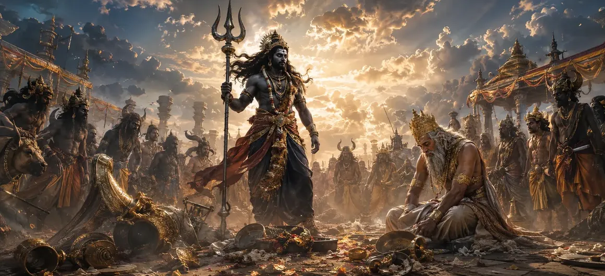

The Destruction of Daksha's Sacrifice — Part 3
The twenty-second chapter of the Vayaviya Samhita reaches the focal climax of the retribution, focusing on the direct confrontation with King Daksha.
Sage Vayu details how the architect of the arrogant sacrifice is finally brought face to face with his transgressions.
This chapter marks the definitive turning point in the epic narrative of cosmic correction.
Chapter 22 Highlights
Confronting Daksha
Portrays Virabhadra coming face to face with the arrogant King Daksha.
Divine Reckoning
Presents the stark realization of unrighteousness forced upon Daksha.
Overpowering Hubris
Demonstrates the complete collapse of royal pride before divine justice.
Total Neutralization
Shows the final suppression of all remaining resistance in the arena.
Unyielding Authority
Reinforces the absolute supremacy of Lord Shiva's eternal order.
Prelude to Part 4
Sets the stage for the ultimate transformation and resolution in Chapter 23.
Core Topics in This Chapter
King Daksha Brought to Account
With the sacrificial grounds completely leveled, Virabhadra strode directly toward King Daksha, who stood isolated amidst the ruins of his ambition.
The monarch, blinded by ego and hostility, now faced the unyielding manifestation of divine justice.
Virabhadra's Stern Reprimand
In thunderous tones, Virabhadra rebuked Daksha for committing the ultimate sacrilege of excluding Lord Shiva from the grand sacrifice.
He exposed the folly of royal arrogance, explaining that true authority stems from humility and devotion to the Supreme.
The Total Collapse of Royal Pride
Daksha, stripped of his illusion of invincibility, found himself unable to utter a word in defense of his unauthorized actions.
The weight of his transgression silenced his once-arrogant voice, humbling him completely before the divine forces.
Neutralization of Final Opposition
Any remaining loyalists or guards attempting a feeble defense were instantly neutralized without unnecessary bloodshed, ensuring complete submission.
The entire arena was thoroughly purged of unrighteous influence.
Enforcing Cosmic Rectification
This pivotal encounter demonstrated that no mortal status, regardless of how exalted, exempts anyone from the laws of cosmic harmony.
The destruction served as an essential correction to restore balance to the universe.
The Climax of the Retribution
As Part 3 concludes, the dramatic tension reaches its absolute peak, setting the stage for the definitive resolution of the narrative.
The fate of Daksha now hangs in the balance of divine grace and justice.
Transition to Chapter 23
Having witnessed the direct confrontation with Daksha in Chapter 22, Rishi Vayu introduces Chapter 23, 'The Destruction of Daksha's Sacrifice — Part 4'.
Chapter 23 details the ultimate resolution, the transformation of Daksha, and the restoration of peace.
Key Teachings of Chapter 22
Inescapable Justice
The chief instigator of adharma must ultimately face personal accountability.
Silence of Ego
Arrogance collapses entirely when confronted with pure divine truth.
Supreme Supremacy
Lord Shiva's authority is absolute and cannot be bypassed by mortal pride.
The Cost of Hubris
Blind ambition inevitably results in total structural and spiritual collapse.
Cosmic Balance
Confronting transgression is necessary for restoring universal harmony.
Climactic Peak
Reaches the narrative zenith before the final resolution in Chapter 23.
Spiritual Reflection
The direct confrontation between Virabhadra and King Daksha teaches us that no position of power can shield anyone from the consequences of ego; true wisdom lies in recognizing our place within the cosmic order.
Living the Message of Chapter 22
Examine your intentions to ensure humility guides your actions rather than pride.
Acknowledge your mistakes openly and embrace accountability as a path to growth.
Honor the divine presence in all beings to avoid the pitfalls of arrogance.
Key Spiritual Concepts
The direct and unyielding face-to-face confrontation with King Daksha.
The absolute crushing of kingly and egoistic pride.
The execution of divine justice upon the instigator of transgression.
The authoritative reprimand delivered to restore righteousness.
The transition to the final resolution detailed in Chapter 23.
The ultimate reaffirmation of Lord Shiva's supreme authority.
Chapter Summary
Vayaviya Samhita Chapter 22 presents The Destruction of Daksha's Sacrifice — Part 3. Highlighting the direct confrontation with King Daksha, Virabhadra's stern reprimand, and the total collapse of royal pride, this chapter marks the climactic zenith of the narrative. It sets the stage for Chapter 23, 'The Destruction of Daksha's Sacrifice — Part 4', where the ultimate resolution and transformation unfold.
Frequently Asked Questions
1. What is the primary subject of Vayaviya Samhita Chapter 22?
Chapter 22 details the direct confrontation with King Daksha and the climax of the divine retribution orchestrated by Virabhadra.
2. How does King Daksha face the consequences of his actions?
Daksha is confronted directly for his arrogance and disrespect toward Lord Shiva, leading to his severe humbling and subjection to divine justice.
3. What happens to the remaining elements of the sacrifice in this chapter?
All remaining remnants of the unauthorized ritual are fully neutralized, completing the total dismantling of the sacrificial arena.
4. Why is this chapter designated as Part 3?
It builds upon the initial invasion and the chastisement of the deities from the previous parts, bringing the narrative to the focal clash with Daksha.
5. What spiritual lesson does the encounter with Daksha emphasize?
It emphasizes that temporal power, royal status, and pride cannot protect anyone from ultimate accountability to the Supreme Lord.
6. What is the next chapter for navigation after Chapter 22?
The next chapter for navigation is Chapter 23, titled 'The Destruction of Daksha's Sacrifice — Part 4'.
“When the architect of ego stands before divine justice, even the loudest pride is reduced to the profound silence of truth.”
Continue Through Vayaviya Samhita
Chapter 22 details The Destruction of Daksha's Sacrifice — Part 3. Continue to Chapter 23, The Destruction of Daksha's Sacrifice — Part 4.